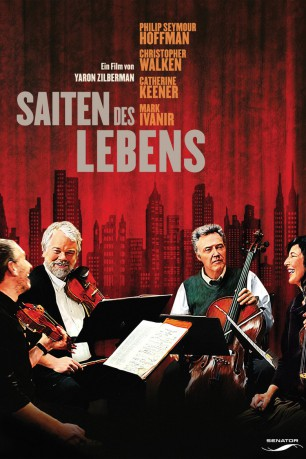

#2462 Saiten des Lebens
Alternativ: A Late Quartet
 
 IMDB-Wertung: 7.1 / 10
IMDB-Wertung: 7.1 / 10  Metascore: 67
Metascore: 67 
Das New Yorker Fugue String Quartet steht kurz vor seinem 25. Jubiläum, als der Cellist und Gründer der Gruppe von seiner Parkinson-Krankheit erfährt. Durch die Ankündigung seines Rückzugs geraten die festen Strukturen und Positionen in Gefahr, das fragile Beziehungsgeflecht droht auseinanderzubrechen. Neben Eifersucht und Konkurrenzdenken gefährden auch Liebesaffären das Fortbestehen der Gruppe. Es dauert lange bis die vier individuellen Persönlichkeiten wieder eine gemeinsame Stimme finden.
Jahr: 2012
Dauer: 105 Minuten
FSK: 6
Land: USA Studio: Entertainment OneTonspuren: DTS - ,
Untertitel:
Auflösung: 1080p (1920x800) Größe: 5201 MB
Genre: Drama, Musik
Regisseur: Yaron Zilberman
Drehbuch: Seth Grossman, Yaron Zilberman, Yaron Zilberman
Soundtrack: Angelo Badalamenti
Darsteller:
 Catherine Keener als Juliette Gelbart
Catherine Keener als Juliette Gelbart Christopher Walken als Peter Mitchell
Christopher Walken als Peter Mitchell Philip Seymour Hoffman als Robert Gelbart
Philip Seymour Hoffman als Robert Gelbart Mark Ivanir als Daniel Lerner
Mark Ivanir als Daniel Lerner Imogen Poots als Alexandra Gelbart
Imogen Poots als Alexandra Gelbart Madhur Jaffrey als Dr. Nadir
Madhur Jaffrey als Dr. Nadir- Liraz Charhi als Pilar
 Wallace Shawn als Gideon Rosen
Wallace Shawn als Gideon Rosen- Megan McQuillan als Sotheby's Executive
- Jasmine Hope Bloch als Cello Student , uncredited
 Kevin Cannon als Actor , uncredited
Kevin Cannon als Actor , uncredited Marty Krzywonos als Cab Driver , uncredited
Marty Krzywonos als Cab Driver , uncredited- Rebecca Merle als Woman at Cafe , uncredited
- Pamela Quinn als Parkinson's Class Instructor
- Brooklyn Parkinson Group als Parkinson's Class Participants
- Cristian Puig als Flamenco Guitarist
- Rebeca Tomas als Flamenco Dancer
- David Redden als Auctioneer
- Ted Hartley als Winning Bidder
- Stephen Payne als Jack
- Alyssa Lewis als Little Girl in Subway
- Attacca String Quartet als Julliard String Quartet
- Keiko Tokunaga als Violinist
- Luke Fleming als Violist
- Andrew Yee als Steve the Cellist
- Amy Schroeder als Julliard Classroom Student
- Anne Sofie von Otter als Miriam Mitchell
- Nina Lee als Nina Lee
Datei: X:\2012(N-Z)\Saiten des Lebens (2012, FSK6, 1920x800).mkv seit 12.11.2015
Festplatte: HD 2012(N-Z)-2013(A-H)
 Es gibt insgesamt 138 Filme in der Gruppe '2012(N-Z)'
Es gibt insgesamt 138 Filme in der Gruppe '2012(N-Z)'